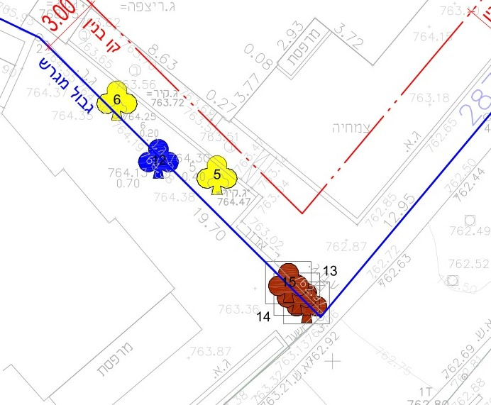
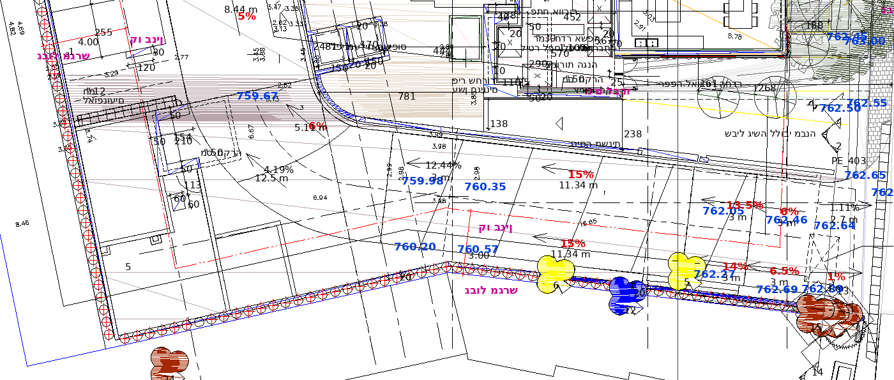
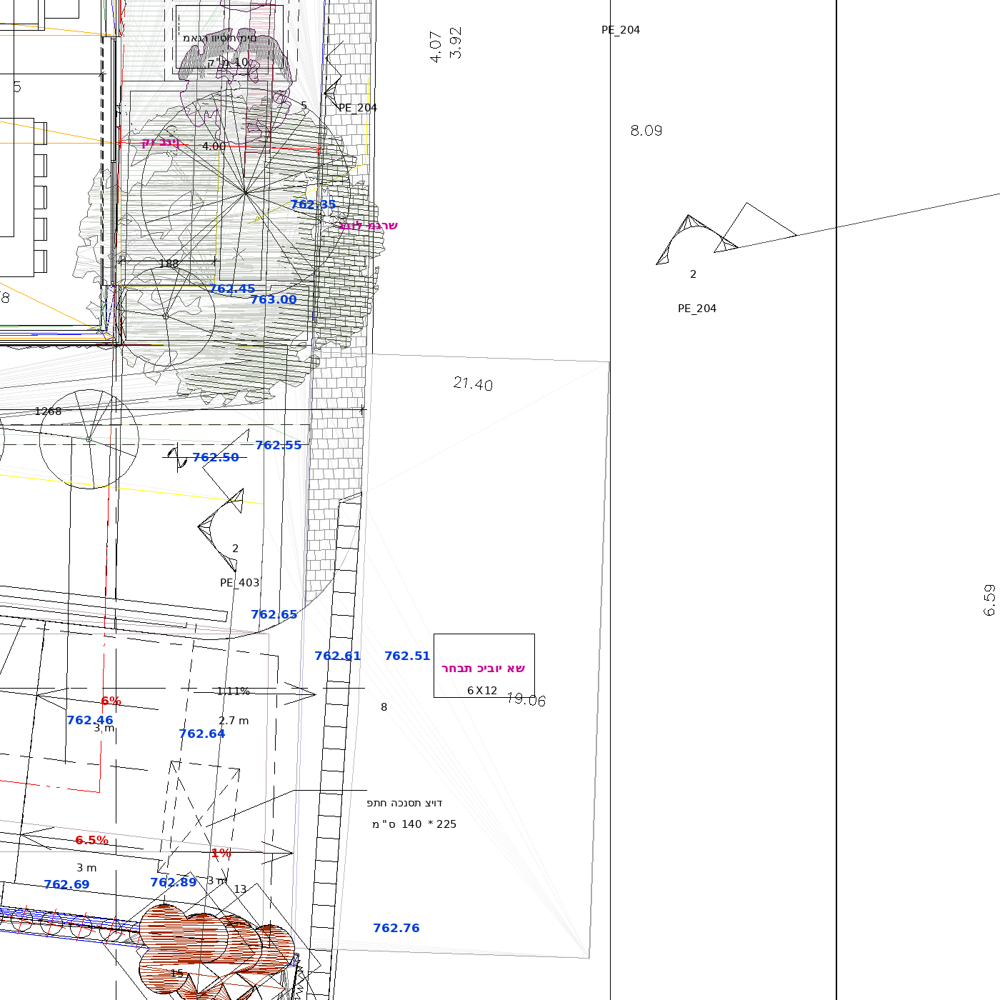
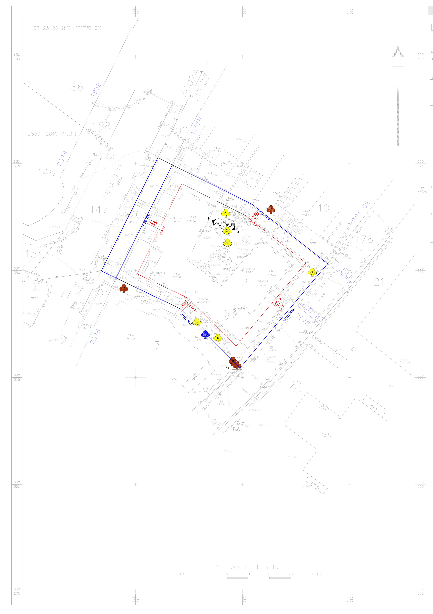
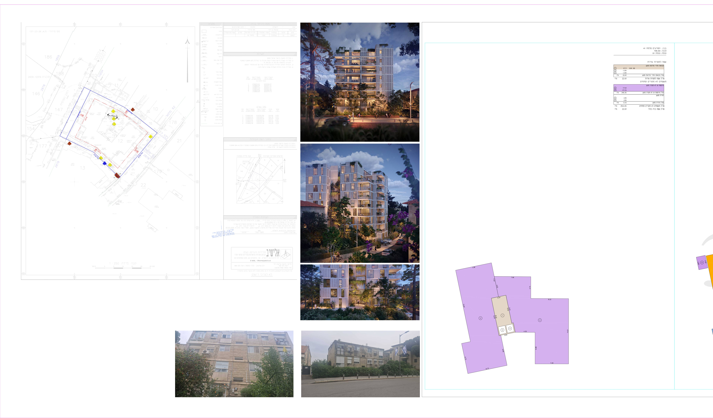
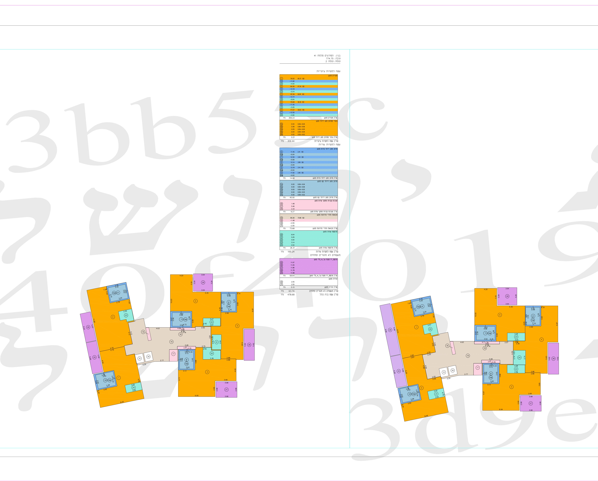
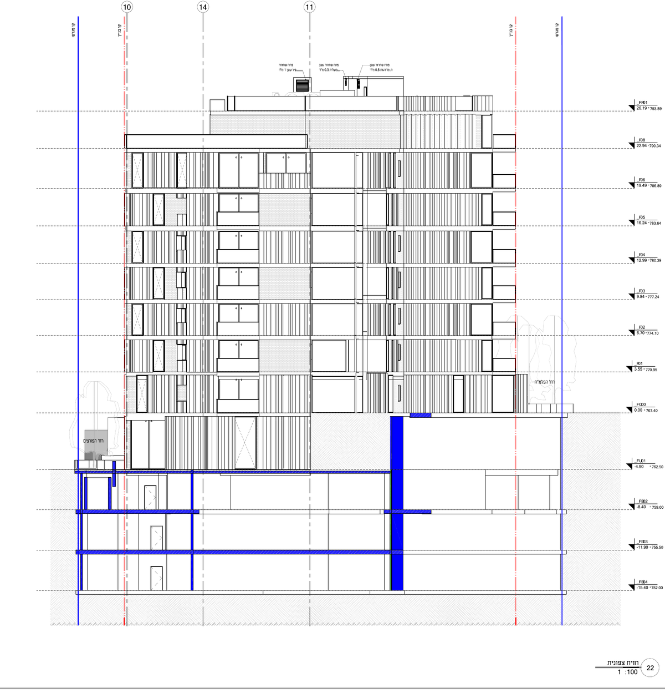
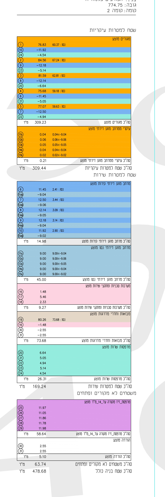
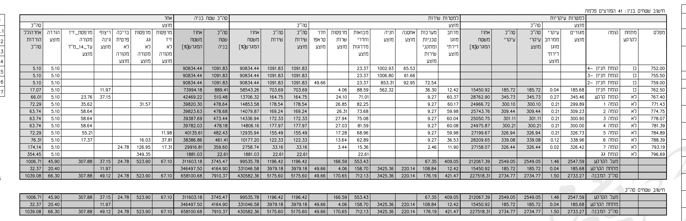

סיכום AI לעיון גינות העיר, מבוסס על מסמכי הבקשה מהארכיב האופטי. אינו חוות דעת מקצועית או משפטית ואינו הגשת התנגדות.
מועדים
מועד אחרון להתנגדויות
13.11.2026 — מודפס על הודעת סעיף 149; אומת מצילום ההודעה באתר (25.10.26)
הודעת סעיף 149 הודבקה באתר
19.10.2026 (תאריך בכתב יד על ההודעה)
תחילת פרסום הבקשה להקלה
18.10.2026 (פיד הרישוי; עולה בקנה אחד עם ההדבקה 19.10)
סיום פרסום מתוכנן בפיד
24.11.2026 (הערכת מערכת בלבד; המועד המחייב הוא 13.11.2026)
המועד אומת. הודעת סעיף 149 המודפסת (עיריית ירושלים, הוועדה המקומית) צולמה מודבקת על גדר האתר: מועד אחרון להתנגדויות 13.11.2026, דרך הטופס המקוון של העירייה (תכנון ובנייה / כתב התנגדות לבקשה להיתר). הפרסום בעיתונות לא אותר ולא אומת.
התמונה המרכזית
המבקשת: יוחאי ק.ב.ד / קבוצת בן-דוד השקעות ויזמס (מהודעת סעיף 149). מתוך 25 המסמכים בארכיון: 24 נפתחו ו-21 נקראו במלואם (מסמך 23 אינו נגיש — 404; מסמך 17 הוא מקור DWG בלתי-קריא כאן; מסמכי 16/22 חופפים כפי הנראה ל-21/24 — פירוט ב״פערים פתוחים״). המצב הקיים — מבנה מגורים בן 3 אגפים בצורת "ח", 3-4 קומות, 21 יח"ד, שנות ה-60, ללא פתרון חניה; לא נמצא היתר מקורי. שטח החלקה 1,202 מ"ר, גוש 30007 חלקה 12. זכויות הבנייה הבסיסיות בחלקה לפי תכנית מתאר 62 (אזור מגורים 1, תחילת תוקף 16.07.1959): 3 קומות ו-76.18% בלבד (תיק מידע 19.5.2025) — כלומר הבנייה המוצעת נשענת כולה על מסלול תמ"א 38 וההקלות המבוקשות.
המוצע: הריסה מלאה; חפירה לקו מגרש בעומק 3-4 קומות חניה תת-קרקעית; שני אגפי מגורים עם גרעין משותף וגשר מעבר 5.5 מ' בכל קומה; 34 יח"ד (21 חלופיות + 13 חדשות — מהודעת סעיף 149); 42 חניות; כניסות משני המפלסים (הפלמ"ח ~767.75, הפורצים ~762). מספר הקומות מופיע בתדריכים ובמסמכי הבקשה — לא נספר מהדמיות.
המסלול התכנוני: תכנית חיזוק מקומית 10038 (הריסה ובנייה מחדש), רישוי מלא עם הקלות. הבניין אינו מוגדר לשימור אך בתחום העיר ההיסטורית — ועדת השימור המליצה לאשר ב-8 תנאים (22.03.26).
נקודות לבחינת המינהל
8 קומות מול זכויות בסיס של 3 קומות ו-76.18% בלבד (תכנית מתאר 62, אזור מגורים 1 — תיק מידע 19.5.2025); מסגרת ההשוואה של העיר (6 קומות, ~215%) היא לפי תכנית האב למושבות, וסטטוסה המחייב/מדיניותה לא אומתו. הניסוח "חריגה" הוא של העיר. שאלה מרכזית: האם מתקבלת חריגה של שתי קומות ברחוב שבו מתנהל מאבק זהה בפלמ"ח 49-51.
שטחי שירות: שני מסמכי מקור, מספרים שונים — טופס 22 (הרמוניקה, 8.2.26): עיקרי 2,734.77 / שירות 5,175.60 / סה"כ 7,910.37 מ"ר; זיהוי תכנית (15.02.26): "עיקרי מבוקש 2545.46", "שירות מבוקשים 5470.48". מחלקת התכנון עצמה כותבת שחלק מהשטחים שסווגו כשירות הם "שטחים עיקריים לכל דבר" ודורשת תיקון בכל מסמכי הבקשה. בשני המסמכים השירות כפול בקירוב מהעיקרי.
טבלת אחוזי בנייה: הערה 20 של מחלקת התכנון — "יש לתקן בטבלת השטחים את אחוזי הבנייה, אינם כתובים נכון". שאלה פתוחה: האם תוקן בנוסח עדכני והאם נדרש פרסום מתוקן.
עצים: 11 בתחום, 4 ברושים בערכיות גבוהה; מוצעת כריתת 6 ושימור 5. ועדת השימור דרשה עומק אדמה גננית מעל תקרת החניה ורצועת גינון 1.5 מ' לשני הרחובות — לוודא שהתנאים נכנסו להחלטה.
מפלסים וקשר לרחוב: שתי כניסות במפלסים שונים (~5.75 מ' הפרש); חלקה 203 (דרך) עם מדרגות — נדרש תיאום עם אדריכל העיר.
הקשר עירוני: מחלקת התכנון דרשה הצגת הקשר עירוני רחב בהדמיות/חתכים — ההצגה הנוכחית צרה.
דירת יזם בגג: ועדת השימור התנגדה לאיחוד האגפים בדירת יזם (מרחב ציבורי חשוך, מופע חורג) — לבדוק שהתנאי התקבל.
עבירות בניה קיימות: תנאי להתחלת עבודות — פירוק כל העבירות ואישור פיקוח.
חניה — כניסה, סוג ומספר (מענה לשאלת תושב)
סוג החניה
חניון תת-קרקעי, 3.5 קומות חניה מתחת לקרקע; תקן חנייה עירוני — גבוה (זיהוי תכנית, 15.02.26)
מספר חניות
42 מוצעות, לפי נספח תנועה וחנייה; נדרש אישור תושי"ה — לא נראה במסמכים שנסרקו
רמפת הכניסה
מרחוב הפורצים — אומת בתכנית הפיתוח: שיפועי הרמפה (12.5%-15%, מקטעי נחה 6%-6.5%) על חזית 762.3-763.0 = מפלס הפורצים
דרישת העירייה
להסית את הרמפה לשימור עצים 5+6; שורת עצים 10-15 (ערכיות גבוהה) לשימור
מפלסים (חתך רוחב, גיליונות 21-22)
כניסה הפלמ"ח F00=767.40; קומות F01-F08 עד 790.34, גג 793.59; כניסה הפורצים FL01=762.50; חניון עד FB04=752.00
אימות: תכנית הפיתוח (מסמך 21 בארכיון) מראה את הרמפה על חזית הפורצים — שיפועי 12.5%-15% יורדים למפלסי החניון (749-758); מפלסי החזית 762.3-763.0 תואמים את הפורצים (~762), והחזית השנייה 767.4-768.0 את הפלמ״ח (~767.75). תומך: זיהוי התכנית מקשר את הרמפה לעצים 5+6 (לכריתה) ושורת 10-15 (לשימור), ובמפת המדידה הם בפינה הדרומית על גבול הפורצים. כניסות רגלי: ראשית מהפלמ״ח, משנית מהפורצים.
הפינה הדרומית — עצים 5, 13-14 על גבול הפורצים

חיתוך ממפת המדידה: עץ 5 (צהוב) ואשכול 13-14 (חום) על הגבול הכחול בפינה הדרומית — האזור שאליו מיוחסת הרמפה לפי זיהוי התכנית.
פתח הרמפה — רינדור מנתוני התשריט המקוריים

רינדור מנתוני הווקטור הגולמיים של מסמך ההרמוניקה (הגשה מקוונת 24.09.26) — לא צילום של הגיליון: קימורות שוטחו, מילויים לא שוחזרו וחלק מהתוויות העבריות עלולות להופיע הפוכות, אך הקווים, התוויות והמפלסים מקוריים. הייחוס לרחובות נעזר בהסברות חתומות-שם בחבילה: הפורצים=762.x, הפלמ״ח=767.4. נראים: שיפועי הרמפה (אדום) היורדים מרצועת הרחוב במפלסי 762 (כחול) פנימה, ועצים 5+6 על פתח הרמפה.
רחוב הפורצים — מדרכה ובקשות לערעור
רחבת כיבוי האש אותרה בתכנית הפיתוח: על חזית הפורצים, במפלס ~762.5, והיא חורגת מקו גבול המגרש לכיוון הרחוב — כלומר על רצועת הגינון והמדרכה של הפורצים, בדיוק כפי שמחלקת התכנון דחתה: "מוצעת על המדרכה… אינה מקובלת". לידה מסומנת התווית "מים לברז" (סוג הברז לא נקבע במפורש — להמשך בירור) ובאזור הכניסה מאגרי מים תת-קרקעיים ("מאגר וויסות מים", "מאגר מים לספרינקלרים"); בקומות — גלגלון כיבוי ופנל כבאים. בנוסף: תכסית תת-הקרקע המוצעת היא 100% משטח המגרש (חפירה עד גבולות המגרש), ומולה דרישת העירייה לצמצם ל-80% — הנוסח הסופי טרם נקבע, וייתכן שגבול החפירה ישתנה. בנוסף נדרשת רצועת גינון של 1.5 מ׳ לכל הפחות כלפי הפורצים והפלמ״ח.
רחבת כיבוי האש — רינדור מנתוני התשריט המקוריים

אותה שיטה ואותן מגבלות רינדור: הרחבה מצוירת כמלבן חתום "רחבת כיבוי אש 6X12" מעבר לרצועת המדרכה (השיבוץ האנכי) בצד הרחוב — אימות חזותי לניסוח זיהוי התכנית "יושבת על רצועת הגינון ומוצעת על המדרכה".
גבול הידע. חתכי הרוחב המוגשים (גיליונות 21-22) מראים את קופסת החניון נוגעת בקווי המגרש (כחול) משני עברי הרחוב, עד עומק 752.00 — כ-10.5 מ' מתחת לחזית הפורצים (762.5); חתכי ביצוע ותוכנית תמיכת גבולות אינם בקבצים הקריאים. מיקום הקטע החוסם את המדרכה הוא תצפית תושב — לא הודגמה בליטה של החלקה לתוך תוואי הרחוב, ולא נמצא במסמכים חישוב רוחב מדרכה קיימת מול קו רחוב.
טיוטת נוסח לערעור (לא הוגש):
חניה: לדרוש הצגת מיקום מעודכן של רמפת הכניסה (לאחר הסטתה לשימור עצים 5+6) ואישור תושי"ה ל-42 החניות, לרבות ניתוח השפעת תנועת החניון על רחוב הפורצים.
שמירת המדרכה: לדרוש תנאי מפורש שהמדרכה הקיימת ברחוב הפורצים לא תיפגע בשל חפירת החניון התת-קרקעי ושלבי הביצוע — לרבות תוכנית תמיכת גבולות ואבחון מצב המדרכה לפני ואחרי; רחבת כיבוי האש לא תמוקם על המדרכה, כפי שמחלקת התכנון עצמה קבעה.
מדרכה רציפה: לבקש מהוועדה לבחון הקצאה/הפקעה של הרצועה בקצה המגרש החוסמת לטענת התושבים את רציפות המדרכה ברחוב הפורצים, לטובת מדרכה תקינה רציפה — בכפוף לאימות התוואי; מנוסח כבקשת בחינה מותנית, לא כטענת עובדה.
הכפלת תנועה ואפקט מצטבר: ספירה עצמאית מתצלום אוויר 2025 של המקטע הפורצים 20 עד פינת הפלמ״ח מצאה 37 כלי רכב חונים (35-40; פורסם ב-github.com/reihlinstinct/parking-reports תחת docs/aerial). 42 החניות המוצעות — שכל תנועתן עוברת ברמפה מהפורצים — עלולות להכפיל את מספר הרכבים המזדהים עם המקטע (הערכה, לא נתון מהבקשה). ברחוב צר ומתעקל שרציפות המדרכה בו שנויה במחלוקת, הכפלה כזו פוגעת בבטיחות הולכי רגל ובגישת חירום. יתרה מכך: פרויקטי תמ״א 38 נוספים באותה מערכת רחובות (פלמ״ח 49-51 בהליך דומה) צפויים להוסיף ביקוש חניה בסדר גודל דומה. לדרוש ניתוח תנועה מצטבר למערכת הפורצים/הפלמ״ח כולה, אישור תושי״ה כתנאי, ובחינת צמצום החניון או פתרון משותף.
חניה מול מדרכה — הבסיס התכנוני-משפטי: לבקש מהוועדה להשתמש בסמכותה ליתן היתר על תנאי (סעיף 108 לחוק התכנון והבנייה, תשכ״ה-1965) ולדרוש: (א) הצגת עמידה בתקן החניה העירוני (״גבוה״, לפי זיהוי התכנית) או הקלה מנומקת, לרבות אישור תושי״ה; (ב) הבטחת מדרכה רציפה ונגישה לאורך החזית — רוחב פנוי של לפחות 1.3 מ׳ לדרכי גישה לפי ת״י 1918 חלק 2 (נגישות הסביבה הבנויה) ורצועת הגינון 1.5 מ׳ שמחלקת התכנון וועדת השימור דרשו. רוחב/רציפות המדרכה הקיימת לא אומתו במסמכי הבקשה — לדרוש אבחון מצב כתנאי.
תדריכים — חיתוכים מהבקשה
החיתוכים מהמסמך כפי שהוגש, ללא שכבות גרפיות נוספות. הרמוניקה 8.2.2026, הארכיב האופטי של עיריית ירושלים, בקשה 2026/0439.00.
מפת מדידה — נקודות יחוס

גבול המגרש בכחול, הבניין הקיים באדום מקווקו. רחוב הפלמ״ח מצפון-מזרח, רחוב הפורצים מדרום-מערב. גוש 30007, חלקה 12. סימון עצים (צהוב/חום) לפי סקר העצים. חץ צפון ומדד 1:250 בגיליון.
גיליון המיקום המלא

שלוש הדמיות יזם (ערב) ושני תצלומי הבניין הקיים, כפי שהוגשו. ההדמיות אינן ראיה למספר קומות.
תוכניות קומה

שני האגפים עם הגרעין המשותף והגשר. כתום=דירות, כחול=חדרים רטובים, סגול/ורוד=מרפסות/שירות, בז'=גרעין.
חתך רוחב — גיליון 22 (הרמוניקה PDF, מסמך 24)

חתך הרוחב כפי שהוגש: מפלסי הקומות (ימין) מ-F00=767.40 (חזית הפלמ"ח) עד F08=790.34 וגג 793.59; מתחת לקרקע FL01=762.50 (חזית הפורצים) ועד FB04=752.00. קופסת החניון נוגעת בקווי המגרש (כחול) משני העברים — ראו נקודת המדרכה.
טבלת שטחים — קומה 2

דוגמה לפירוט לפי קומה: עיקרי 309.44 מ"ר, שירות 169.24 מ"ר, לא-מקורה 63.74 מ"ר, סה"כ 478.68 מ"ר.
טופס 22 — חישוב השטחים המרכזי

הטבלה המרכזית בבקשה: מעל הקרקע 3,745.47 מ"ר, מתחת לקרקע 4,164.90 מ"ר, סה"כ 7,910.37 מ"ר. שים לב: זיהוי התכנית מציג מספרים אחרים — ראו נקודה 2.
פערים פתוחים
מסמך 23 (צרופת הגשה מקוונת): אינו נגיש בארכיב (404 קבוע, נוסה בשלושה ניסיונות).
מסמך 24 (הרמוניקה בפורמט PDF) נפתח ונקרא — מלוא הגיליונות; ממנו אומתו חתכי הרוחב והמפלסים. מסמך 06 (תיק מידע) נפתח — ממנו זכויות הבסיס. מסמך 17: התקבל כקובץ DWG (מקור CAD) — לא קריא כאן ללא כלי CAD. מסמכי 16/22 (DWF): כפי הנראה חופפים למסמכי 21/24 — לא נקראו בנפרד.
נספח תנועה וחנייה: לא נמצא בארכיון הסרוק; אישור תושי"ה ל-42 החניות לא נראה.
מפת תכנית האב למושבות להשוואה: טרם אותר מקור מפה. נמסגר החלופי: תכנית מתאר 62, אזור מגורים 1 (תיק מידע) — 3 קומות, 76.18%.
פרסום הודעת סעיף 149 בעיתונות: לא אותר ולא אומת (ההדבקה הפיזית באתר אומתה 19.10.26).